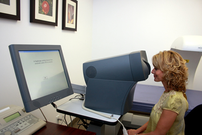

Executive Physicals
The Hyman
Health 360-degree ExecuCare examination is a head-to-toe assessment of a patient’s overall
physical health, screening and risk assessment for heart and cardiovascular disease, vascular imaging
to evaluate risk of
stroke or aneurysm, vision screening,
audiometry testing, bone density, screening for early signs of cancer and lung function tests.
Specific tests include:
Blood
- Complete Blood Count
- Comprehensive Chemistry Panel
- Highly Sensitive C reactive Protein
- Complete Lipid Panel
- Prostate Specific Antigen (for men)
- Thyroid Metabolic Function
Urine
- Full high sensitive dipstick and direct technician microscopic examination
Cardiovascular
- 12-lead resting electrocardiogram with a Marquette state-of-the-art interpretation system
- Metabolic Stress Echocardiogram with Acuson Echocardiogram, Quinton Stress System and Sensormedics Metabolic VO2 Max detection. All digital performed in an ICAEL supervised laboratory with Board Certified Cardiologist Interpretation
- Blood Pressure Testing with Computerized Impedance Plethysmography
- Ultrasound assisted Arterial Brachial Index Peripheral Vascular Testing of all 4 extremities
- Ultrasound Vascular Testing of the Carotid Arteries
- Computerized digital 24-hour blood pressure monitoring if needed
- Computerized digital 24 hour Holter monitoring for irregular heartbeats if needed
- Two- view Chest X-ray
- Complete Pulmonary Function Testing including spirometry, Lung Volumes, Diffusion Capacity, Impedance Testing, Neuromuscular Evaluation on a Medgraphics Elite Series Plethysmograph with daily preventive maintenance calibration
- Upper Capsule Endoscopy with Given PillCam ESO ll for esophageal and stomach evaluation with no anesthesia requirement and Board Certified Gastroenterologist Interpretation
- Body fat analysis based on the Hologic Discovery W system interrogation
- Upper Extremity Muscle Strength Testing with Jamar Dynamometer
- Review of immunization records
- Administration of any missing shots during the physical or on a subsequent visit
- Bone Mineral Density and osteoporosis screening with Hologic Discovery W latest software including FRAX calculations
- Computerized audiometry with tympanic membrane pressure testing
- Digital Retinal Optical Scanner
- Computerized Digital Video Nystagmography for dizziness with Board Certified Doctorate in Audiology Interpretation
- Watch PAT portable overnight home based sleep monitoring with Computerized Analysis
- Full body scan
- Calcium-score heart screening
- CT of the lungs, abdomen or pelvis
- CT angiogram of coronary arteries
GO BACK UP
Pulmonary
Gastrointestinal
Anthropomorphic vital signs
Immunizations
Ancillary
Optional Services
You may choose to add the following off-site diagnostics for an additional fee: